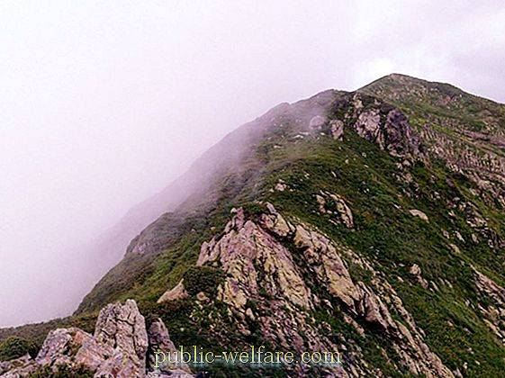
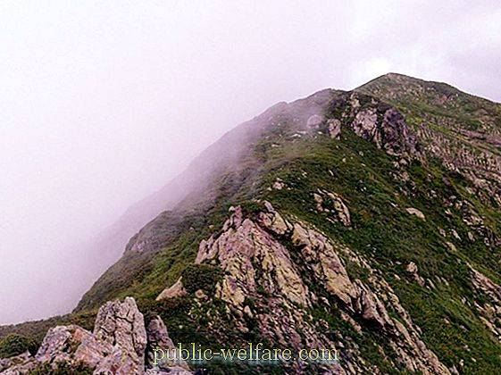

Kavkazsky Nature Reserve
The 5 Best Sochi Mountains
Kavkazsky Nature Reserve, natural area set aside for research in the natural sciences, at the western end of the Caucasus Mountains, in southwestern Russia. It includes the upper reaches of the Malaya Laba, Bolshaya Laba, Mzymta, and Shakhe rivers. The Kavkazsky Nature Reserve was established in 1924 and has an area of 1,017 square miles (2,633 square km). It is within a folded-mountain region subjected to the action of glaciers and snow; the rocks are mostly crystalline granites and gneisses. At low elevations forests of beech and oak prevail, and at higher elevations extensive forests of fir are found; higher still is rhododendron, and above this, alpine meadows. The reserve’s wildlife includes brown bear, wild pig, lynx, red deer, Caucasian tur (a type of wild goat), chamois, wolf, and the European bison, which has been reintroduced. Bird species include the Caucasian blackcock, Caucasian snowcock, and alpine chough. The reserve is used for scientific research concentrating on reacclimatization studies of the European bison and on the preservation of Caucasian flora and fauna.
1. Roza Pik
The star, the gem and the mecca of Krasnaya Polyana is the peak “Rosa Peak”: to take a ride to the clouds by cable car is a must check for every tourist who turn to be in Sochi. This is the place with the best view on Caucasian ridge and be sure it will take your breath away. There are a lot of entertainments on the territory of Rosa Khutor resort for those who like activities, but this cableway is also for those who are not really fans of winter sports – mountains can not be not admired, they don’t leave anybody indifferent. Hiking-lovers can check their strength here during the summer time, and in winter “Rosa Peak” is really heaven for sportsmen and all who consider to be them. The trendiest and youth place is the first hotel for riders in Russia – Riders Lodge. You can find here Game Zone Riders, where you can enjoy all the new things from play station, coffee shop Surf Coffee, a small cinema on the first floor of the hotel, and a vegetarian restaurant. But all these is just an addition to local sport company: trust me, even having come here alone and without any astonishing sport skills, just in few days of socialization you will have the contacts of all local stars and your technique will also be upgraded

2. Chyornaya Piramida
The star, the gem and the mecca of Krasnaya Polyana is the peak “Rosa Peak”: to take a ride to the clouds by cable car is a must check for every tourist who turn to be in Sochi. This is the place with the best view on Caucasian ridge and be sure it will take your breath away. There are a lot of entertainments on the territory of Rosa Khutor resort for those who like activities, but this cableway is also for those who are not really fans of winter sports – mountains can not be not admired, they don’t leave anybody indifferent. Hiking-lovers can check their strength here during the summer time, and in winter “Rosa Peak” is really heaven for sportsmen and all who consider to be them. The trendiest and youth place is the first hotel for riders in Russia – Riders Lodge. You can find here Game Zone Riders, where you can enjoy all the new things from play station, coffee shop Surf Coffee, a small cinema on the first floor of the hotel, and a vegetarian restaurant. But all these is just an addition to local sport company: trust me, even having come here alone and without any astonishing sport skills, just in few days of socialization you will have the contacts of all local stars and your technique will also be upgraded
3. Achishko
The star, the gem and the mecca of Krasnaya Polyana is the peak “Rosa Peak”: to take a ride to the clouds by cable car is a must check for every tourist who turn to be in Sochi. This is the place with the best view on Caucasian ridge and be sure it will take your breath away. There are a lot of entertainments on the territory of Rosa Khutor resort for those who like activities, but this cableway is also for those who are not really fans of winter sports – mountains can not be not admired, they don’t leave anybody indifferent. Hiking-lovers can check their strength here during the summer time, and in winter “Rosa Peak” is really heaven for sportsmen and all who consider to be them. The trendiest and youth place is the first hotel for riders in Russia – Riders Lodge. You can find here Game Zone Riders, where you can enjoy all the new things from play station, coffee shop Surf Coffee, a small cinema on the first floor of the hotel, and a vegetarian restaurant. But all these is just an addition to local sport company: trust me, even having come here alone and without any astonishing sport skills, just in few days of socialization you will have the contacts of all local stars and your technique will also be upgraded
 

4. Chugush
The star, the gem and the mecca of Krasnaya Polyana is the peak “Rosa Peak”: to take a ride to the clouds by cable car is a must check for every tourist who turn to be in Sochi. This is the place with the best view on Caucasian ridge and be sure it will take your breath away. There are a lot of entertainments on the territory of Rosa Khutor resort for those who like activities, but this cableway is also for those who are not really fans of winter sports – mountains can not be not admired, they don’t leave anybody indifferent. Hiking-lovers can check their strength here during the summer time, and in winter “Rosa Peak” is really heaven for sportsmen and all who consider to be them. The trendiest and youth place is the first hotel for riders in Russia – Riders Lodge. You can find here Game Zone Riders, where you can enjoy all the new things from play station, coffee shop Surf Coffee, a small cinema on the first floor of the hotel, and a vegetarian restaurant. But all these is just an addition to local sport company: trust me, even having come here alone and without any astonishing sport skills, just in few days of socialization you will have the contacts of all local stars and your technique will also be upgraded
5. Pseashkho
The star, the gem and the mecca of Krasnaya Polyana is the peak “Rosa Peak”: to take a ride to the clouds by cable car is a must check for every tourist who turn to be in Sochi. This is the place with the best view on Caucasian ridge and be sure it will take your breath away. There are a lot of entertainments on the territory of Rosa Khutor resort for those who like activities, but this cableway is also for those who are not really fans of winter sports – mountains can not be not admired, they don’t leave anybody indifferent. Hiking-lovers can check their strength here during the summer time, and in winter “Rosa Peak” is really heaven for sportsmen and all who consider to be them. The trendiest and youth place is the first hotel for riders in Russia – Riders Lodge. You can find here Game Zone Riders, where you can enjoy all the new things from play station, coffee shop Surf Coffee, a small cinema on the first floor of the hotel, and a vegetarian restaurant. But all these is just an addition to local sport company: trust me, even having come here alone and without any astonishing sport skills, just in few days of socialization you will have the contacts of all local stars and your technique will also be upgraded